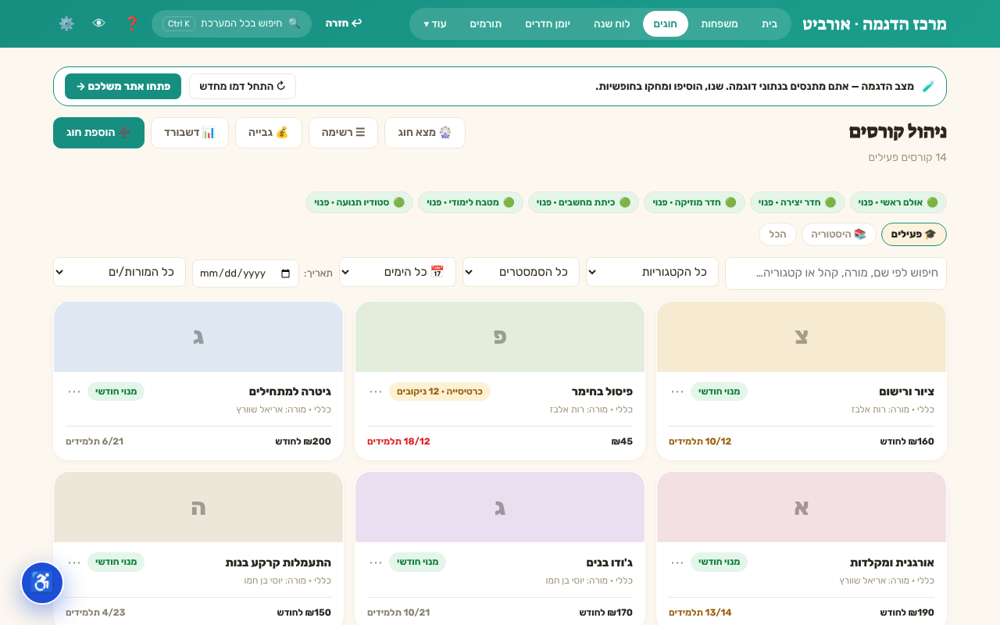
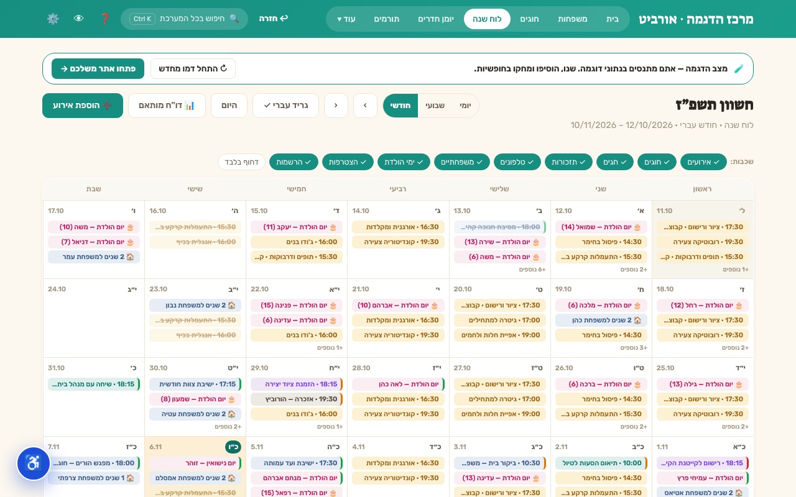

אורביט — המשרד של מרכז החוגים, במסך אחד
נוכחות, כרטיסיות, גבייה ולוח שנה עברי — בלי אקסל, בלי מחברות, בעברית מלאה.
המערכת נבנתה עבור עמותה פעילה שעובדת עליה עד היום.
מה זה עושה ביום-יום
✅ נוכחות הפוכהרושמים רק מי שחסר. כל הקבוצה נוכחת בטאפ אחד.
🎟 כרטיסיות ניקובמכירת כרטיסייה וניקוב כניסה — והתראה כשהכרטיסייה נגמרת.
⏳ רשימת המתנהחוג מלא? נכנסים לתור, ומשבצים כשמתפנה מקום.
💰 מרכז גבייהכל החייבים מכל החוגים במסך אחד, עם תזכורת בוואטסאפ.
📢 הודעה לכיתההודעת וואטסאפ לכל ההורים של קבוצה — בלי לחפש טלפונים.
📊 דשבורד חוגיםתפוסה, המתנה, חובות וחיסורים לכל חוג. ייצוא ל-CSV.
📅 לוח שנה עברי-לועזיחגים, ימי הולדת עבריים ותאריכים עבריים חוזרים — מחושבים לבד.
🚪 יומן חדריםמי בכל חדר עכשיו, וחסימה אוטומטית בחגים.
📱 עובד גם בלי אינטרנטמתקינים כאפליקציה בטלפון או במחשב. גיבוי לקובץ בלחיצה.
איך זה נראה

מסך החוגים — תפוסה, מחיר וכרטיסיות בכל כרטיס (נתוני הדגמה)

לוח השנה בגריד עברי — חוגים, ימי הולדת ואירועים (נתוני הדגמה)
הקמה בשבוע
| יום 0 | שולחים לנו את האקסל שלכם (תלמידים, משפחות, חוגים) |
|---|
| ימים 1–3 | אנחנו מקימים: שם ולוגו שלכם, ייבוא הנתונים, חוגים, חדרים ומורים |
|---|
| יום 4 | הדרכה של 45 דקות לרכזת |
|---|
| יום 7 | אתם עובדים לבד. שבועיים תמיכה צמודה בוואטסאפ |
|---|
כמה זה עולה
הקמה חד-פעמית ₪1,500 +מע"מ · מחיר-מייסד ל-10 הלקוחות הראשונים, נעול ל-12 חודשים. בלי התחייבות — מבטלים בהודעה, והנתונים יוצאים איתכם בקובץ. תשלום בהוראת-קבע, אשראי או העברה.
רוצים לראות? 20 דקות הדגמה על הנתונים שלכם — [טלפון / וואטסאפ של מאיר]
המערכת מתאימה לארגונים עד 1,000 תלמידים/משפחות. כל היכולות בדף קיימות במערכת היום; חלקן מופעלות לפי בחירה בהקמה.